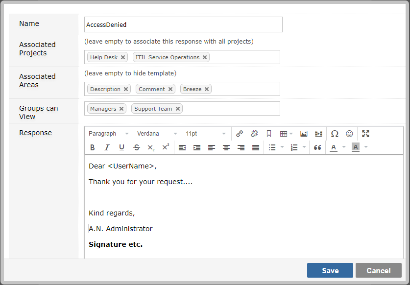

You can create pre-defined responses to common ticket queries. So when such query arrives you can respond quickly.
Add any canned reply as required. You have access to the item and user you are responding to and the user who is posting the response.

The following table shows the valid properties of the canned response model:
| Field | Description |
|---|---|
| ToFirstname | The first name of the user we are responding to |
| ToSurname | The surname of the user we are responding to |
| ToEmail | The email of the user we are responding to |
| User.Entity.Firstname | The first name of the user who is posting the reply |
| User.Entity.Surname | The first name of the user who is posting the reply |
| User.Entity.Fullname | The full name of the user who is posting the reply |
| TheItem.AffectedVersionNumbers | Any associated affected versions (comma separated) |
| TheItem.Age | Number of days since item created |
| TheItem.ClosedDate | The date and time this item was closed |
| TheItem.ComponentNames | Components associated with item (comma separated) |
| TheItem.Comments[n].Entity.Comment | Collection of all comments where "n" represents index of comment |
| TheItem.Created | The date and time when the item was created |
| TheItem.CustomFields["your custom field name"].Entity.Data | |
| TheItem.Description | The full description of the item |
| TheItem.DueDate | When work should complete for the item |
| TheItem.Elapsed | Number of minutes since item opened till closure |
| TheItem.EstimatedEffort | The number of hours and minutes to complete item (0h 0m format) |
| TheItem.ExcessTime | The number of hours and minutes exceeding original estimate (0h 0m format) |
| TheItem.FixedInVersion | Any associated version |
| TheItem.Id | The id of the item (e.g. 23456) |
| TheItem.IssueKey | The key of the item (e.g. GEM-23456) |
| TheItem.LastComment | Latest comment for the item |
| TheItem.LoggedHours | Total number of hours logged against this item |
| TheItem.LoggedMinutes | Total number of minutes logged against this item |
| TheItem.OriginatorData | Any associated source data for item (e.g. email address) |
| TheItem.PercentComplete | How much work has been completed (e.g. 25%) |
| TheItem.Points | Allocated points for item |
| TheItem.Priority | The current priority of the item (e.g. High) |
| TheItem.ProjectCode | The project code that the item belongs to (e.g. ACME) |
| TheItem.ProjectName | The project name that the item belongs to (e.g. My Project) |
| TheItem.RemainingTime | The number of hours and minutes to remaining for item (0h 0m format) |
| TheItem.Reporter | The fullname of the user who reported the item (e.g. Joe Bloggs) |
| TheItem.Resolution | The current resolution of the item (e.g. Complete) |
| TheItem.ResolvedDate | The date and time this item was marked as resolved |
| TheItem.ResourceNames | The resources assigned to the item (comma separated) |
| TheItem.Revised | The date and time when the item was last revised |
| TheItem.Reviser | The name of the user who last revised the item |
| TheItem.Severity | The current severity of the item (e.g. Showstopper) |
| TheItem.IsInSLA | Check if the item part of SLA |
| TheItem.SLATimeLeftFull | The SLA time left in days hours minutes format (1d 2h 3m) |
| TheItem.SLATimeLeftMinutes | How many minutes left for SLA |
| TheItem.SLATimePassedMinutes | How many minutes have passed for SLA |
| TheItem.StartDate | When work should commence on the item |
| TheItem.Status | The current status of the item (e.g. Unassigned) |
| TheItem.TimeLogged | The number of hours and minutes to logged against item (0h 0m format) |
| TheItem.Title | The title of the item (e.g. Fix Cross-browser issues) |
| TheItem.Type | The type of the item (e.g. Bug) |
| TheItem.Visibility | The visibility of the item (e.g. Everyone) |
| TheItem.Votes | The number of votes for this item |
The Email Reply editor within a ticket allows you to select the canned response.

If you do not see the Email Reply section please ensure Screens are confgiured correctly.